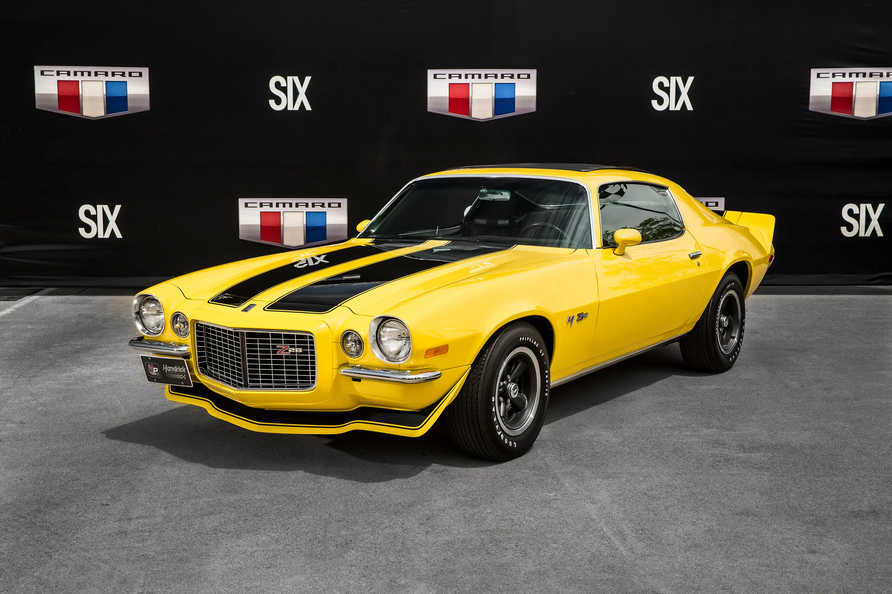

Lançado em 1966 para enfrentar o Mustang, o Camaro surgiu como um carro esportivo de alto desempenho. Sua primeira geração trouxe versões como SS e Z/28, que se destacaram nas ruas e nas pistas.
Galeria


Características
- Chassi robusto: construído sobre a plataforma F-body da GM.
- Motorização: disponível com motores de seis cilindros ou potentes V8.
- Suspensão esportiva: pneus de alta performance e freios a disco.
- Design: capô longo, linhas aerodinâmicas e faróis embutidos.
Vídeo em destaque
Curiosidades
- O nome "Camaro" foi criado para significar "companheiro" dos motoristas.
- O Camaro ficou famoso como Bumblebee na franquia "Transformers".
- Existem versões conversíveis e superesportivas em várias gerações.
- O Camaro é um dos carros clássicos mais valorizados entre colecionadores.